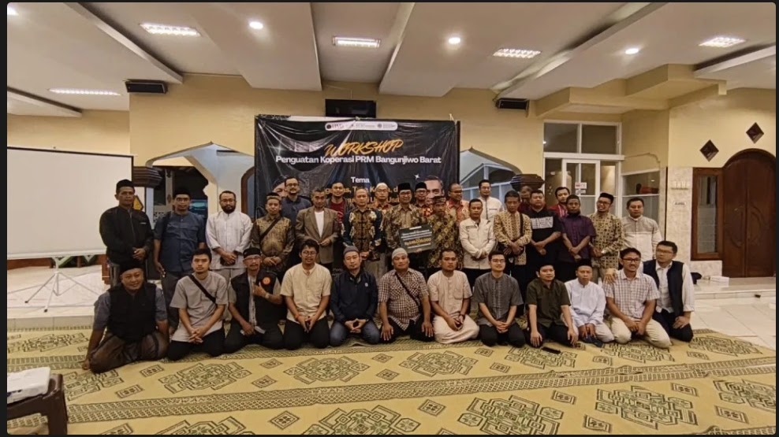

UMY Gelar Edukasi Pengembangan Koperasi Syariah bagi PRM Bangunjiwo Barat
Bangunjiwo -- Dalam rangka mendukung penguatan kapasitas kelembagaan dan literasi ekonomi masyarakat, tim pengabdian kepada masyarakat dari Universitas Muhammadiyah Yogyakarta (UMY) menyelenggarakan kegiatan edukasi bertema "Peluang dan Tantangan Pengembangan Koperasi Syariah di Era Digital" bagi anggota dan pengurus koperasi di lingkungan Pimpinan Ranting Muhammadiyah (PRM) Bangunjiwo Barat. Kegiatan ini dilaksanakan secara daring melalui Zoom Meeting pada Senin, 16 Februari 2026 dan diikuti oleh pengurus koperasi, anggota PRM Bangunjiwo Barat, serta akademisi dan praktisi pengembangan ekonomi syariah.
Informasi Lengkap UMY Gelar Edukasi Pengembangan Koperasi Syariah bagi PRM Bangunjiwo Barat
Kegiatan ini menghadirkan Aslichan Burhan el-Blitary, Direktur Eksekutif PINBUK ICMI sekaligus Kepala Bidang Pengembangan Usaha LP UMKM PP Muhammadiyah, sebagai narasumber utama. Dalam paparannya, ia menjelaskan bahwa perkembangan koperasi syariah di Indonesia semakin memiliki landasan yang kuat dengan hadirnya Fatwa DSN-MUI No. 141 Tahun 2021 yang secara khusus mengatur tentang koperasi syariah. Fatwa tersebut memberikan pedoman yang lebih jelas terkait berbagai aspek pengelolaan koperasi syariah, mulai dari pendirian koperasi, kelembagaan, permodalan, kegiatan usaha dan jasa keperantaraan, hingga kegiatan sosial koperasi syariah.
Menurut Aslichan Burhan, perkembangan teknologi digital juga membuka peluang baru bagi koperasi syariah untuk berkembang lebih luas. Namun di sisi lain, koperasi juga menghadapi berbagai tantangan yang berkaitan dengan tata kelola organisasi, literasi keuangan anggota, serta kemampuan memanfaatkan teknologi dalam pengelolaan usaha.
"Di era digital, koperasi syariah memiliki peluang yang sangat besar untuk berkembang, tetapi pada saat yang sama membutuhkan penguatan kapasitas kelembagaan dan literasi anggota agar mampu beradaptasi dengan perubahan ekonomi yang semakin dinamis," jelasnya dalam pemaparan materi.
Kegiatan ini merupakan bagian dari program pengabdian kepada masyarakat yang dilakukan oleh dosen Universitas Muhammadiyah Yogyakarta dalam rangka mendukung penguatan koperasi berbasis komunitas di Bangunjiwo. Sakir Ridho Wijaya, S.IP., M.I.P. selaku Ketua Tim Pengabdian, menjelaskan bahwa kegiatan ini bertujuan untuk meningkatkan pemahaman masyarakat mengenai tata kelola koperasi syariah sekaligus membuka wawasan mengenai peluang pengembangannya di era digital.
"Kegiatan ini merupakan bagian dari upaya kami untuk memperkuat kapasitas kelembagaan koperasi di tingkat komunitas. Kami berharap melalui kegiatan ini, pengurus dan anggota koperasi di PRM Bangunjiwo Barat dapat memahami konsep koperasi syariah secara lebih komprehensif serta mampu mengembangkan koperasi sebagai instrumen penguatan ekonomi masyarakat," ujar Sakir Ridho Wijaya.
Dalam kesempatan yang sama, Prof. Dr. Dyah Mutiarin, S.IP., M.Si. menegaskan bahwa koperasi memiliki peran penting dalam mendorong pembangunan ekonomi masyarakat yang inklusif. Menurutnya, koperasi yang dikelola dengan baik dapat menjadi ruang pemberdayaan ekonomi sekaligus memperkuat solidaritas sosial dalam komunitas.
"Koperasi berbasis komunitas seperti yang ada di Bangunjiwo memiliki potensi besar untuk berkembang apabila didukung oleh tata kelola yang baik, literasi ekonomi yang kuat, serta jejaring kelembagaan yang luas," jelas Dyah Mutiarin.
Sementara itu, Prof. Dr. Ulung Pribadi, M.Si. menambahkan bahwa kolaborasi antara perguruan tinggi dan masyarakat menjadi faktor penting dalam memperkuat program pemberdayaan ekonomi berbasis komunitas. Melalui kegiatan pengabdian kepada masyarakat, perguruan tinggi dapat memberikan kontribusi nyata dalam mendampingi masyarakat untuk mengembangkan potensi ekonomi lokal.
"Perguruan tinggi memiliki tanggung jawab untuk hadir di tengah masyarakat melalui kegiatan pengabdian. Pendampingan seperti ini diharapkan dapat membantu komunitas dalam membangun kelembagaan ekonomi yang lebih kuat dan berkelanjutan," ujar Ulung Pribadi.
Melalui kegiatan ini, diharapkan anggota koperasi di lingkungan PRM Bangunjiwo Barat dapat memperoleh pemahaman yang lebih baik mengenai konsep koperasi syariah, peluang pengembangannya di era digital, serta strategi penguatan kelembagaan koperasi berbasis komunitas. Program pengabdian ini juga menjadi bagian dari komitmen Universitas Muhammadiyah Yogyakarta dalam mendorong pengembangan ekonomi masyarakat yang berlandaskan nilai-nilai keadilan, kebersamaan, dan keberlanjutan.
sumber :
https://www.kompasiana.com/itvumy7450/69d253ddc925c40c7e16cb32/umy-gelar-edukasi-pengembangan-koperasi-syriah-bagi-prm-bangunjiwo-barat?page=2&page_images=1
Penguatan SDM Jadi Kunci, UMY Dampingi Pengelolaan Koperasi di Bangunjiwo
Bantul - Sebanyak 18 dosen yang terlibat antara lain King Faisal Sulaiman, Sri Rejeki Murtiningsih, Sakir Ridho Wijaya, Ali Maksum, Arie Kusuma Paksi, Hafiez Sofyani, M. Bahrul Ilmi, Sadam Fajar Shodiq, Mohamad Muhajir, Rafyoga Jehan Pratama Irsadanar, Syahruramdhani, Sutrisno Wibowo, Susilo Nur Aji Cokro Darsono, Endro Dwi Hatmanto, Nurwahyu Alamsyah, Ahmad Zaki, Cahyo Setiadi Ramadhan, serta Zuhud Rozaki. dari berbagai disiplin ilmu Universitas Muhammadiyah Yogyakarta (UMY) turun langsung mendampingi pemberdayaan ekonomi masyarakat di Masjid Al Yakin, Ngentak, Kalurahan Bangunjiwo, Bantul, Senin (6/4/2026).
Kegiatan ini menyasar pengurus Pengurus Ranting Muhammadiyah (PRM) Bangunjiwo Barat dengan fokus penguatan koperasi sebagai pilar kemandirian ekonomi warga.
Program ini tidak sekadar pelatihan biasa. Para akademisi memberikan materi komprehensif mulai dari legalitas pendirian koperasi, prinsip koperasi syariah, hingga tata kelola organisasi yang profesional.
“Pendampingan ini dirancang agar koperasi tidak hanya berdiri, tetapi juga berkembang dan berkelanjutan,” ujar salah satu pemateri dalam kegiatan tersebut.
Tak hanya teori, peserta juga dibekali strategi praktis pengembangan usaha. Konsultan bisnis retail Noor Rakhman menekankan pentingnya membaca kebutuhan pasar.
“Koperasi harus adaptif, memahami konsumen, dan berani berinovasi agar mampu bersaing,” katanya.
Ia juga menyoroti pentingnya digital marketing, pelayanan pelanggan, hingga penguatan brand sebagai kunci sukses usaha koperasi.
Kepala Dinas Koperasi, UKM, dan Perindustrian Bantul, Praptanugraha, menegaskan tantangan utama koperasi terletak pada pengelolaannya.
“Mendirikan koperasi itu relatif mudah, tetapi yang paling sulit adalah menjalankannya. Kuncinya ada pada kesiapan sumber daya manusia,” tegasnya.
Ia berharap pelatihan ini mampu mencetak pengelola koperasi yang kompeten dan bertanggung jawab.
Koordinator Pengabdian Masyarakat UMY, Endro Dwi atmanto, menyambut positif kegiatan tersebut.
“Workshop dari UMY sangat membantu kami memahami aspek legalitas dan tata kelola koperasi. Harapannya, koperasi bisa menjadi solusi nyata kemandirian ekonomi masyarakat,” ungkapnya.
Peserta pun mengaku mendapat wawasan baru yang memperkuat peran koperasi sebagai motor penggerak ekonomi di tingkat akar rumput.(waw)
Sumber :
WILISPOST.COM,
Notulen Rapat 23 Feb 2026.pdf
Set Up Mini Market.pdf
Galeri Foto & Dokumentasi (2 Foto)
 Perbesar
Perbesar

Perbesar